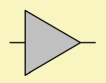
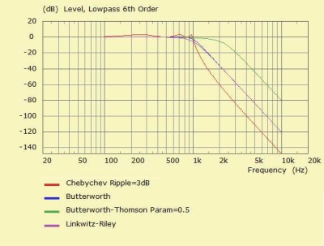
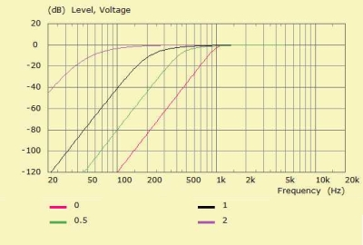
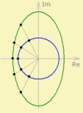
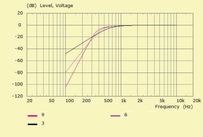
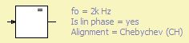

Filter
| Home | LE-Part | Filter |
 |
The component Filter provides a transfer function:
V2/V1 = H(s)
with input voltage V1 and output voltage V2 and
Laplace variable s. The Frequency Response can be calculated by setting
s = jω.
The Filter component provides a range of parameters, which can be polynomial
coefficients, values of a standard alignment or of an arbitrary function.
It is also possible to include an external data-set.
The Filter has infinite input resistance and zero output resistance. It can be regarded as a controlled voltage source. The Filter element can be a network element. Often the Filter is wired in-between the global source and the driving point of the network. If cascaded the total transfer function is
H(s) = H1(s)·H2(s)·H3(s)·...
The total transfer function of each Filter component can consist of four parts:
- Rational transfer function with arbitrary coefficients ai and bi.
- Rational transfer function of standard alignment.
- Pure time delay with parameters t0 or z0.
- General formula system in ω or f as run-time variables.
- Frequency response in form of a data-set.
List of Parameters
| Caption | String | Name of component | |
| Formula | String | Formula of parameters and coefficients | |
| fo | Hz | Filter frequency | |
| vo | Amplification factor | ||
| Delay to | s | Delay as time | |
| Delay zo | m | Delay as acoustic distance | |
| Alignment | [Constant, Block, BU, LR, CH, BU-Th, BE-Allpass] | ||
| Order | Order of characteristic polynom | ||
| d | Damping factor (Alignment=Block) | ||
| Transform | [Unchanged, Highpass, Bandpass, Allpass] | ||
| Scale dir | [Upwards, Downwards] | ||
| Scale factor | Frequency scale factor | ||
| Is lin phase | Enforces linear phase | ||
| Data-file | Transfer function as data | ||
| Gen formula | String | General transfer function | |
 |
 |
 |
 |
 |
 |
 |
 |
Global
fo
Each filter-block has a so-called Filter-Frequency, f0, which is the normalization frequency of the transfer-function: sn = jω/ω0
vo
vo is the amplification-factor of the component. Amplification if vo > 1, attenuation if vo < 1.
Delay to, Delay zo
to and zo yield a constant time-delay of the transfer function with to = zo/c and c speed of sound. to is the signal delay in seconds: exp(-jω·to)
For example the top graph pictures the real part of the frequency response with a delay. The bottom graph is the associated time response obtained with the help of the Fourier transformation.
Note, the delay is appied in any case even if switch Is Lin Phase is set.
Filter of Alignments
Alignment specifies the type of canonical lowpass-characteristic of the transfer-function.
Block
Block specifies a 1st or 2nd order filter-block. The second order block features a damping factor, which is d = 1/Q.
| Order | 1 | 2 |
| Function |
Butterworth (BU)
The Butterworth alignment creates a maximally flat amplitude response without rippling for any Order >= 2. At fo the amplitude is always down by 3dB. The sum of low and high-pass BU-alignments yield a constant voltage and a constant power for odd order or a 3dB peak at crossover for even order, respectively.
Bessel (BE)
The Bessel alignment yields a maximally flat curve of the Group Delay without rippling for any Order >= 2. The sum of low and high-pass BE-alignemnts do not yield a constant voltage nor a constant power. However, the filter-frequencies of low and high-pass can be scaled so that an almost flat voltage and power response is achieved.
Linkwitz-Riley (LR)
The order of the the Linkwitz-Riley alignment is always even, and the order >= 4. This is so because in AKABAK the LR-transfer-function is the product of two identical Butterworth (BU) functions. The LR has a smoother transition range than the BU-filter. However, the damping-factors are higher as they stem from the BU-alignment of half the order. At the filter-frequency fo the amplitude is down by 6dB. The sum of low and high-pass LR-alignments yield a constant voltage. The power-sum shows a drop of 3dB at cross-over.
Chebychev (CH)
The Chebychev alignment family creates an amplitude-function with a steep transition from pass-band to attenuation band for any Order >= 2. The amplitude is down by 3dB at the filter-frequency fo. There is a controlled ripple in the passband, which can be specified with the help of parameter Ripple.
Butterworth-Thomson (BT)
The Butterworth-Thomson alignment family creates transfer-functions with properties of Butterworth and Bessel for any Order >= 2. With the help of parameter M we interpolate between the BU- and BE-poles. If M=0 we create a Butterworth alignment. With M=1 a Bessel function. Values beyond M>1 will extrapolate the poles.
Order
Order is the degree of the denominator polynomial.
For example, the graph at the side shows the amplitudes of a Butterworth-Thomson (BT) highpass of
Order=3, 6 and 9.
d
d is the damping factor of a second order filter-block
(Alignment Type = Block and Order = 2).
The damping factor is the inverse of the quality factor d = 1/Q.
Transform
Unchanged
Filter transfer functions are originally defined as a low-pass.
Highpass
Highpass transforms the lowpass into a highpass, which attenuates the lower frequency band and transmits the upper frequency band.
Bandpass
Bandpass transforms the lowpass into a bandpass.
The resulting frequency band is symmetric about the filter-frequency
fo if viewed on a logarithmic frequency-axis. The width of this
frequency band is specified by parameter B:
B = (f2 - f1)/f0
with f1 and f2 lower and upper cut-off frequency
and f0 filter-frequency.
Note, that the bandpass-transformation doubles the order of the transfer-function.
Allpass
An allpass should have a constant amplitude but varying phase response. Such a filter typically is used to manipulate the delay of the signal.
Frequency Scaling
This parameter allows to scale the filter-frequency of the alignment up or down depending on the setting Scale Dir. The scale-factor can be useful for fine-tuning cross-over interference.
Linear Phase
If enabled the response is manipulated in such a way that the magnitude of the filter is mapped to the real part. The imaginary part is set to zero:
HL(s) = |H(s)|
This option allows the design of filters under the assumption that it can be realized with the help of an acausal transfer function. For example the approximation with the help of an FIR-filter. Thanks Rob for the suggestion.
Linear Phase has no effect on the explicit specification of additional delay and negative amplification (see above).
The linear phase mode is labeled with the help of an "=" sign inside the symbole:

Filter of Coefficients and Formula
bi and ai are real valued coefficients of the polynomial transfer-function:

| bi | Numerator | any real valued number |
| ai | Denominator | real valued number > 0 |
with i = 0 ... Order.
Specification
Coefficients are entered with the help of a Formula-system. The coefficients of the numerator are called b0=, b1=, b2=,... and those of the denominator a0=, a1=, a2=,.... These function-names are reserved.
Any coefficients not entered are set to zero by default. They may be entered in any order. In addition to entering numerical values, you can also assign expressions and global results.
Note, coefficients should be real valued. However, the formula system allows for complex calculation, which means you can calculate coefficients from complex zeros, for example.
The formula section is also used to assign other parameters of the Filter-component.
General formula-system
It is also possible to enter a complex function in form of a Formula Runtime System.
If the General Formula system is present it will form the transfer function. The rational function system is still active. The result of the rational function will be mapped to the runtime variable "TF".
The general function system has three reserved identifiers:
| f | abscissa frequency | [f] = Hz |
| w | ω = 2πf | [ω] = s-1 |
| wn | ω/(2πfo) | |
| TF | result of the rational transfer functions | |
Frequency Response in Form of a Data-Set
Further the response of the Filter can be multiplied by the complex-valued frequency response of a data-set. This dataset comes from a Curve File Object of the General-Part.
The reference points to the first curve. This curve is named in edit-field labeled Transfer-Function and has a red background.